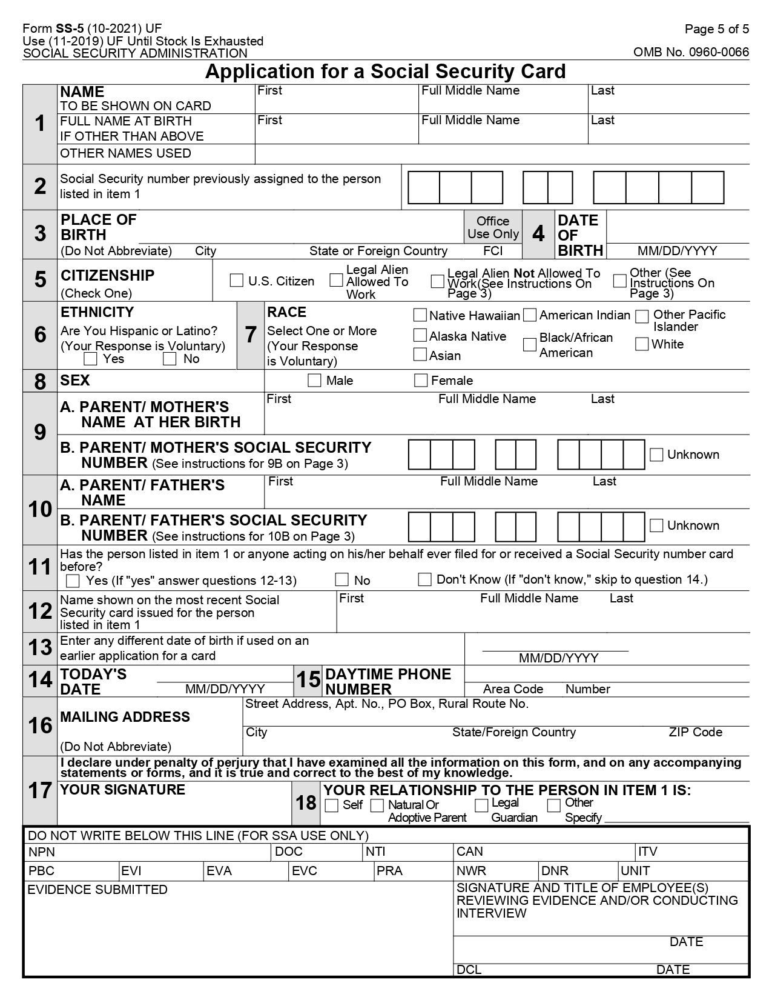
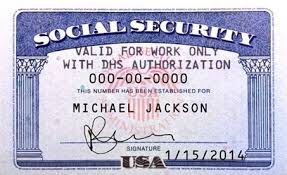

Important: If you need to visit a Social Security office, complete the OSSNAP application and schedule an appointment here.
2026 Update: Many U.S. citizens can replace cards online via my Social Security if no record changes. Non-citizens usually require in-person with immigration docs. Free, 3/year & 10 lifetime limit still applies.
Social Security Card Replacement in 2026
Lost, stolen or damaged card? Replacement is free through SSA. You usually don't need the physical card if you know your SSN — but here's the current process.
Replacement Process for Adults
Limits: 3 replacements per calendar year, 10 lifetime (exceptions rare). Processing: typically 5–10 business days by mail.
Step 1: Check Eligibility
U.S. citizens 18+ with my Social Security account, U.S. address, no name/SSN changes → online possible. Otherwise mail or in-person.
Step 2: Apply Online / Mail / In-Person
Online: my Social Security or start at ssa.gov/number-card. Mail/In-person: Form SS-5 + docs.
Step 3: Receive Card
Mailed to your address. No tracking — call if not received in 3 weeks.
See a quick overview video (official guidance style).
Let's Get Started Now
Replace Card at SSA.gov Schedule Appointment Create/Login my Social Security
Non-Citizen / Immigrant Replacement Guide (H1B, F1, J1, EAD)
For non-citizens, visa holders, and immigrants from any country (e.g., India, Canada, UK, Mexico), SSN card replacement or first-time application usually requires an in-person visit to a SSA office. Online options are limited—follow these steps:
- Check Eligibility & Gather Documents: Confirm your work authorization via USCIS. Visit USCIS Working in the U.S. for details. Required docs vary by visa type—originals only (no copies).
- File OSSNAP Online: Start the process at SSA OSSNAP to pre-fill info and schedule your appointment (required for in-person).
- Schedule Appointment: Use OSSNAP or call 1-800-772-1213. Locate office at SSA Locator.
- Attend In-Person & Submit: Bring Form SS-5 (filled), passport, I-94 (from CBP I-94 site), and visa-specific docs. Expect 7–14 days processing.
- Receive Card: Mailed to U.S. address. Limits apply (3/year, 10/lifetime).
Required USCIS Documents by Visa Type
| Visa Type | Required Documents (Plus Passport & I-94) |
|---|---|
| EAD (Employment Authorization Document) | Form I-766 (EAD card), USCIS approval notice (I-797 if applicable), proof of identity/status. |
| F1 (Student Visa) | Form I-20 (Certificate of Eligibility for Nonimmigrant Student Status), SEVIS fee receipt, OPT/CPT authorization if working, school enrollment proof. |
| J1 (Exchange Visitor) | Form DS-2019 (Certificate of Eligibility for Exchange Visitor Status), sponsor letter, proof of program participation. |
| H1B (Specialty Occupation) | Form I-797 (Approval Notice), LCA (Labor Condition Application), employer petition docs, degree/credentials if needed. |
Tip for International Users: If you're from outside the U.S. (e.g., applying after entry), ensure your I-94 is current. Beware of scams—SSA never charges for cards. For more USCIS visa info: USCIS Forms.
Replacement Scenarios Examples
Online (Simple Loss)
Citizen logs in, verifies ID—card mailed in ~10 days.
Mail (Name Change)
Form SS-5 + marriage cert/passport mailed — arrives 10–14 days.
Lost Everything / Non-Citizen
In-person with passport, visa/EAD/I-94 — appointment needed.
Replacement Limits (2026)
All replacements are free — beware of scam sites charging fees.
Documents Needed (Citizens & Non-Citizens)
Originals or certified copies required (no photocopies):
| Proof Of | Examples |
|---|---|
| Identity | U.S. driver’s license, passport, state ID |
| U.S. Citizenship (if needed) | Birth certificate, U.S. passport |
| Work Authorization (non-citizens) | EAD, I-94, visa, Green Card |
Tip: Call 1-800-772-1213 if unsure about acceptable ID.

Sample Form SS-5 — Download PDF

New replacement card appearance (redacted example).
Frequently Asked Questions
Can I replace online? Yes for eligible U.S. citizens (18+, no changes) via my Social Security. Start here: ssa.gov/ssnumber.
How long? Usually 5–10 business days by mail. No expedited service.
Need proof fast? Use my Social Security for instant benefit verification letter.
Non-citizen / visa holder? In-person typically required; schedule via OSSNAP or call.